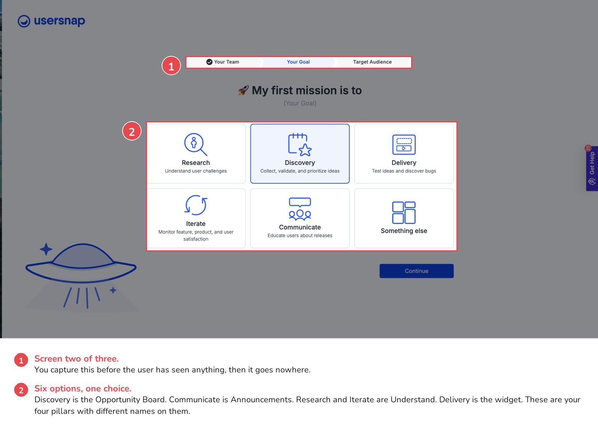
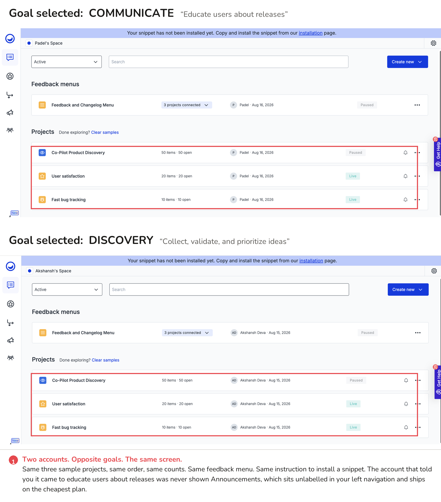
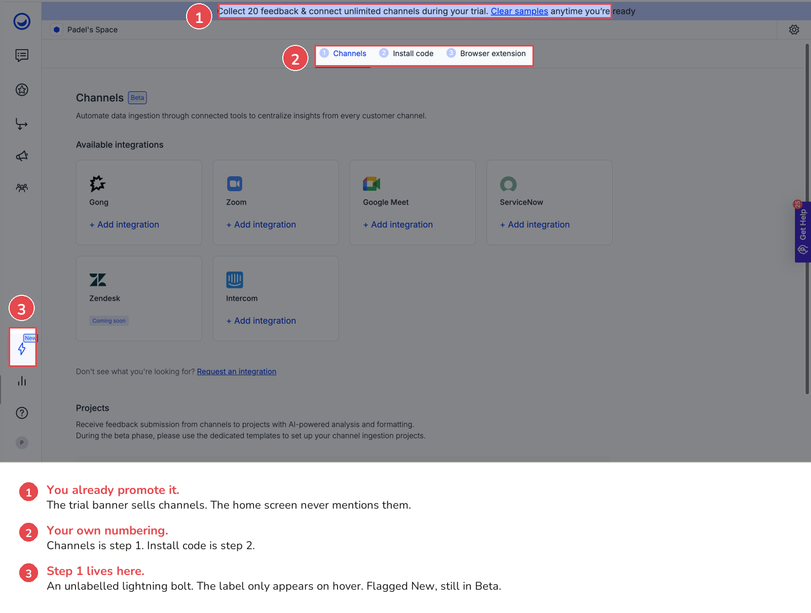
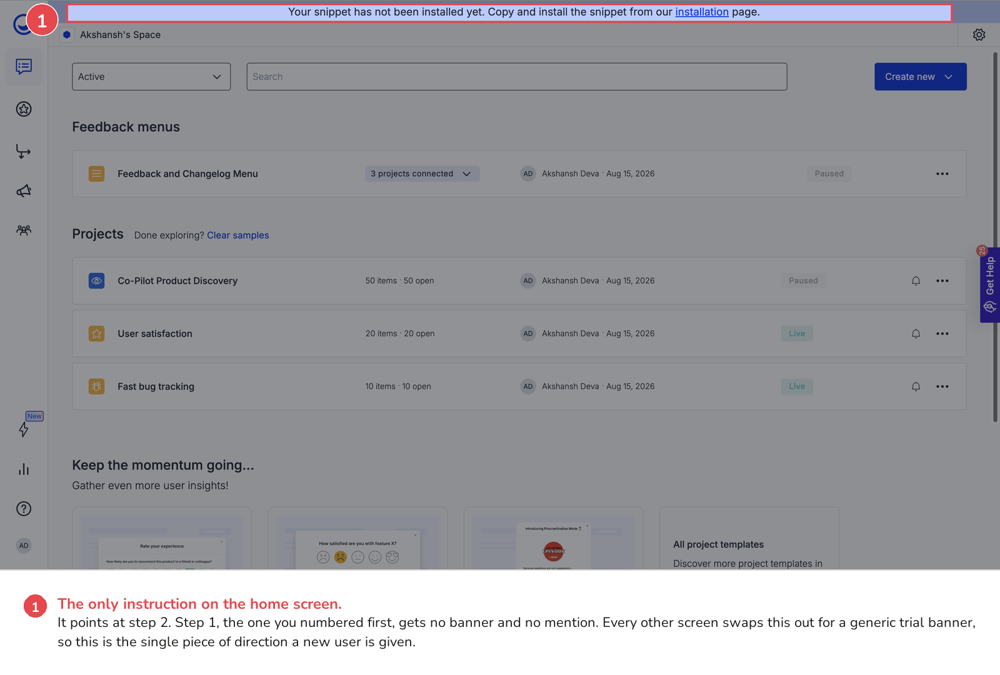
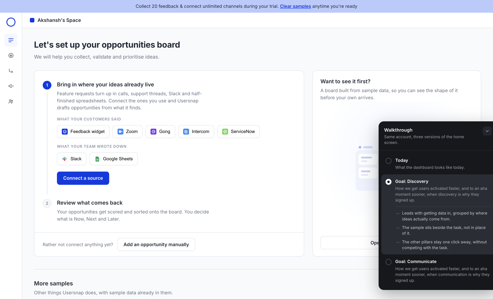

Two problems from my trial, one change that covers both, and a working prototype of it.
I ran two trial accounts side by side. Same setup, same templates. The only difference was the goal each one picked during onboarding. Then I compared what happened next.
There is a lot of product here: Channels, Triage, the Opportunity Board, Announcements, and 24 templates from named product people. The website sells all of it well. The product does not point a new user at the part they need.
I have tried to diagnose one problem and offer one solution to it, to give you an idea of what it would be like to work with me. Everything below is from my own trial over the last two days, and the prototype at the end is clickable.
The second screen of onboarding asks the user to pick a goal.

The six options are your four pillars renamed:
You can only pick one. A PM does most of these in the same month, so I am not sure why it has to be a single choice.
Both accounts then landed on the same screen.

You lose the moment a new user could get activated. They tell you what they came for, the answer goes nowhere, and the first thing you ask is that they install a snippet.
None of this needs new features. You collect the intent, the destinations exist, and you already route this way elsewhere: open a feedback item in Triage and there is a prompt to connect it to an opportunity. It is missing from the screen everyone sees first.
Channels pulls feedback in from Zoom, Gong, Google Meet, Intercom and ServiceNow. This is powerful. Every PM struggles with managing feedback from multiple sources, and you have the solution.

Your setup page numbers Channels as step 1 and Install code as step 2. The home screen does the opposite.

The banner asks about step 2. Step 1 is not mentioned anywhere on the page.
Bring Channels into the first run for the goals that need it, and give the home screen the step you numbered first.
One thing I considered: Channels is in beta, so you may be holding it back deliberately. But the banner on that same page already sells it during the trial, so the decision to promote looks made. It has just not reached the home screen.
One change covers both problems. Route the home screen on the goal you already captured, and let that decide what gets prominence:
Next to each, an option to view a sample. Set yours up here, and if you want to see what it looks like first, click this.
It uses data you already have, and destinations that already exist.
I tried to estimate your design system from screenshots of the tool.
The panel in the corner switches between the home screen as it is today and the two goal-aware versions, and says what changed on each.
